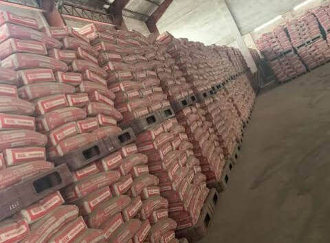
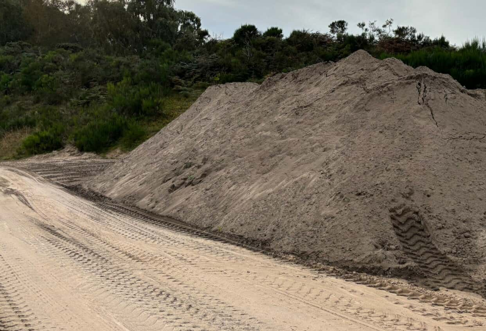
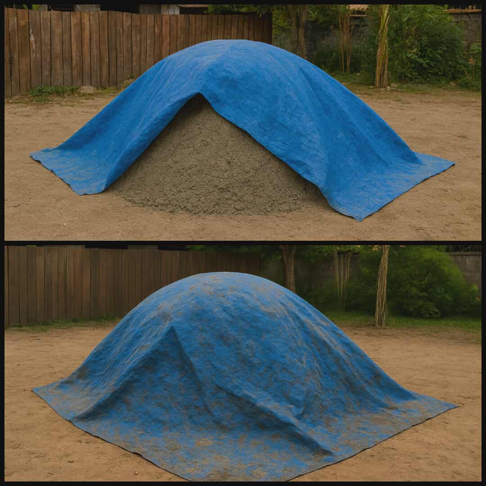
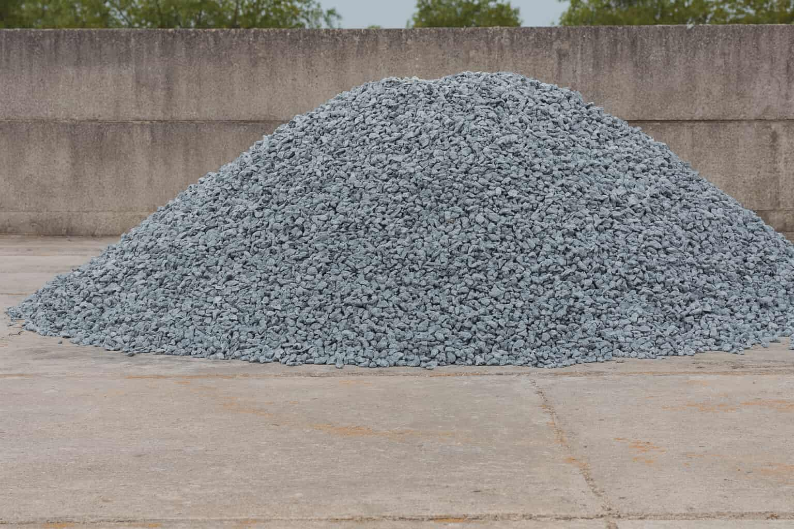
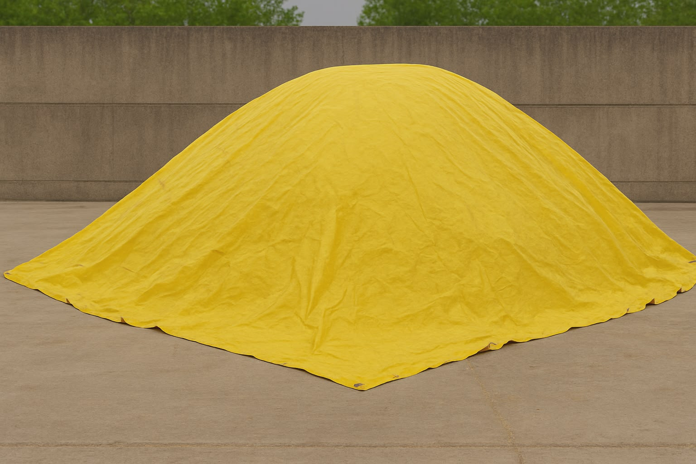

Cement

Portland cement is the binding agent in concrete. Use fresh, dry cement and keep bags sealed and off the ground to avoid moisture pickup. Old or damp cement loses strength and should be discarded.
Handling & Storage
Store in a dry, covered area. Avoid stacking bags on damp soil. If cement becomes lumpy or shows signs of hydration, do not use for structural mixes.
Sand (Concrete Sand)
Use clean, well-graded sand specifically intended for concrete (often called river sand or concrete sand). Avoid beach sand or sand with organic impurities.
Wet vs Dry Sand
Wet sand contains moisture that increases apparent volume; when estimating by volume, account for moisture content (typical wet sand may increase volume by 3–8%). For accurate batching, measure sand by mass or apply a moisture correction factor.
Handling & Tips
Store sand under cover to avoid rain saturation. If using wet sand, reduce mixing water to maintain target water-cement ratio and strength.
Gravel / Coarse Aggregate
Coarse aggregate provides bulk and strength. Use well-graded, clean gravel. Select aggregate size compatible with member thickness and reinforcement spacing to avoid segregation.
Wet vs Dry Aggregate
Surface moisture on coarse aggregate may slightly affect mix water but usually has smaller impact than sand moisture. When aggregates are saturated surface dry (SSD), adjust mix water accordingly.
Handling & Tips
Store aggregates on well-drained platforms, cover to prevent contamination, and avoid mixing different gradations without testing.